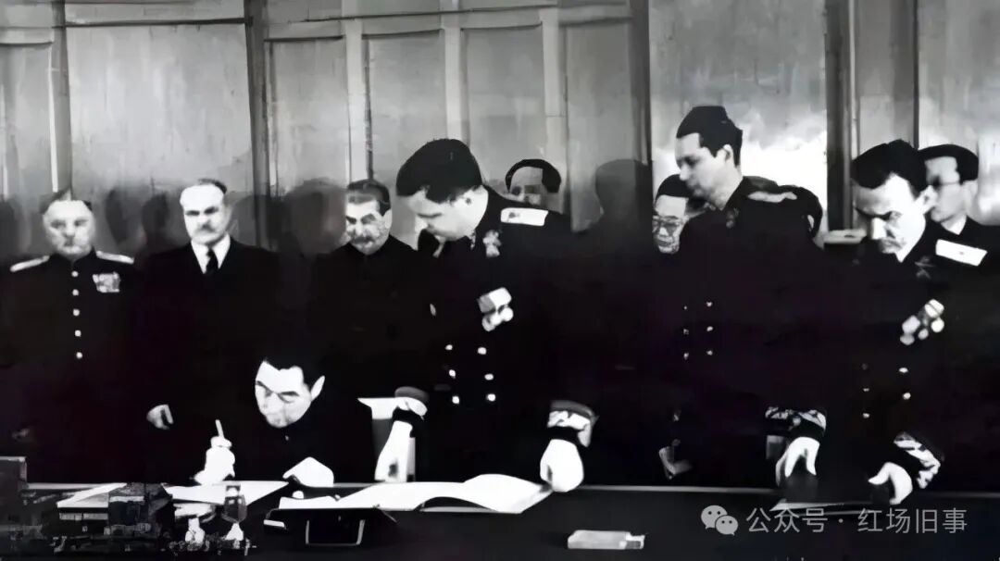
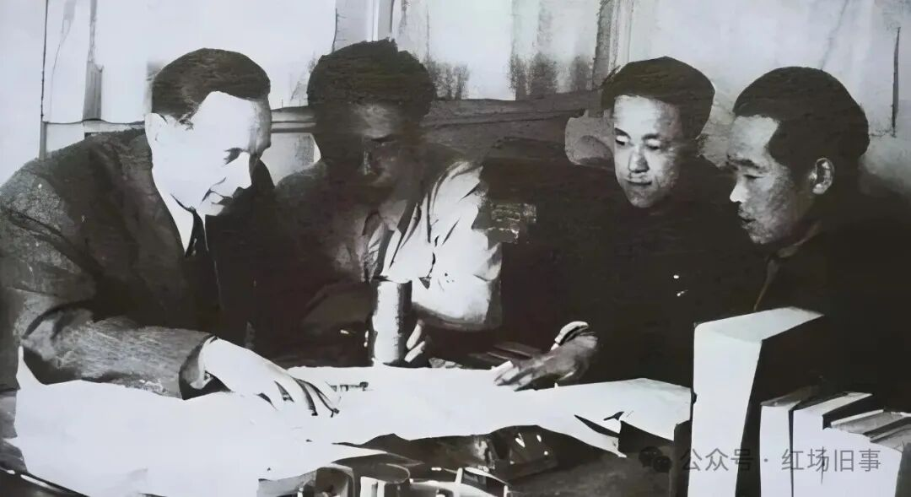
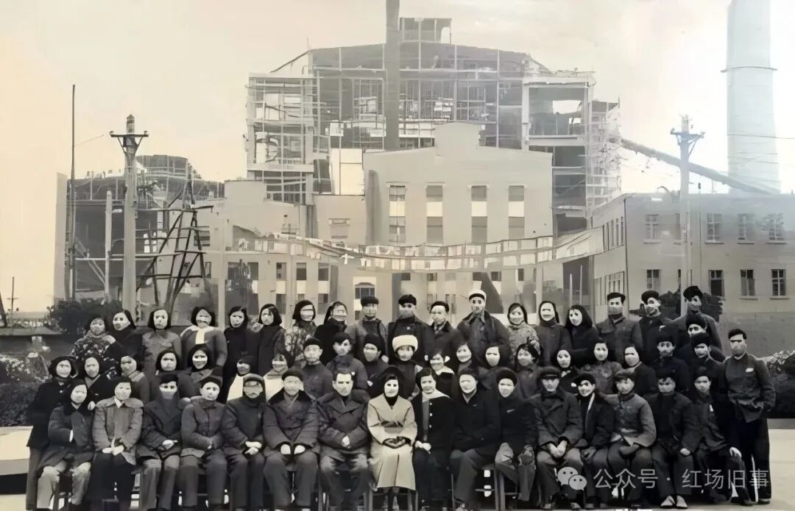

“156项”背后的手把手：苏联如何帮中国奠定工业基础？
文字与图片版权归各自权利人所有。 查看公众号原文 ↗
1950年2月14日，莫斯科克里姆林宫。周恩来与维辛斯基分别代表中苏两国签署《中苏友好同盟互助条约》。斯大林破例出席了签字后的酒会，举杯时对毛泽东说：“今天是个好日子，中苏两国人民从此是兄弟了。”

《中苏友好同盟互助条约》签订
这句话背后，藏着一个后来被称为“156项”的庞大援助计划。建国之初，苏联对华经济援助究竟有多重要？答案写在20亿美元的低息贷款里，写在8000名来华专家的汗水里，更写在中国工业化的起点上。
一、20亿美元大单的三次落笔1950年至1954年，中苏先后签订三批援建协议。第一批50项，集中在煤炭、电力、钢铁等基础工业。1953年5月，第二批91项签订，重点转向国防军工及其配套项目。1954年10月，第三批15项落地，新增能源和原材料工业。三批相加，恰好156项。此后又有增补调整，实际施工150项，但“156项”的称谓沿用至今。这些项目不是普通工厂。长春第一汽车厂、洛阳第一拖拉机厂、鞍山钢铁公司、武汉重型机床厂、兰州炼油化工厂——每一个名字，都是后来中国工业的脊梁。陈云晚年回忆时说：“第一个五年计划的156项，那确实是援助。”资金层面，苏联提供了长期低息贷款。1950年首笔贷款12亿卢布（折合3亿美元），年利率仅1%，十年偿还。此后又有10项贷款协定，年利率2%。20亿美元的总规模，比苏联对印度援助的三分之一还少，但全是“干货”——不是现金，而是成套设备、技术资料和专家服务。
二、8000名专家“手把手教”比资金更珍贵的，是人。20世纪50年代，先后有8000多名苏联技术专家来华工作。他们不仅带来图纸，更带来从选址、设计到安装、调试的全流程指导。

与苏联专家就航空工业进行交流的场景
洛阳工业区是典型案例。苏联著名城市规划专家巴拉金亲自指导选址，把6个“156项”项目集中布局在涧西区，避开了东周王城和隋唐都城遗址。100多位苏联专家常年驻守，每个工厂都设有“专家办公室”，配备大量翻译。湖南株洲硬质合金厂的选址过程更能说明问题。苏联专家提出三条原则性意见和九点具体要求，选址工作组据此反复勘测6处候选地，最终确定走马塘。这种严谨程度，在当时的中国是难以想象的。苏联还接受中国实习生前往学习。到20世纪50年代末，苏联和东欧各国为中国培养了7000多名技术和管理干部。长春第一汽车厂建设时，苏联动员多个设计部门，综合本国各厂经验，为中国设计出最新的汽车制造厂。陈云说：“苏联造了两台机器，他们一台，我们一台。”
三、援助的边界与历史的回响当然，援助不是无偿的。1953年5月的协定规定，1954年至1959年间，中国需向苏联提供钨砂16万吨、铜11万吨、锑3万吨、橡胶9万吨，作为部分补偿。国与国之间，互利是基本逻辑。1958年，中苏科技合作进入更高阶段，签订“122项”协定，从生产技术合作扩展到科学研究领域。但随着1960年苏联撤走全部专家，大规模援助戛然而止。

苏联援华专家的临别留影
即便如此，“156项”留下的遗产依然深远。这些项目形成的企业，大多至今仍在运营，仍是本行业的骨干。更重要的是，它们为中国培养的第一代产业工人和技术骨干，成为后来工业化的“本钱”。
1981年，起草《关于建国以来党的若干历史问题的决议》时，陈云特意对起草人邓力群说：“要通过这些历史问题的论断，再一次说明中国共产党人是公正的。”陈云所说的“公正”，或许就是承认：在那段艰难的起步岁月里，苏联确实帮过中国。第1期 戴笠追捕、中统悬赏、日本特高课全程盯梢：那个让三方头痛的“红色谍王”第5期 从东京到莫斯科：那条改变二战进程的情报